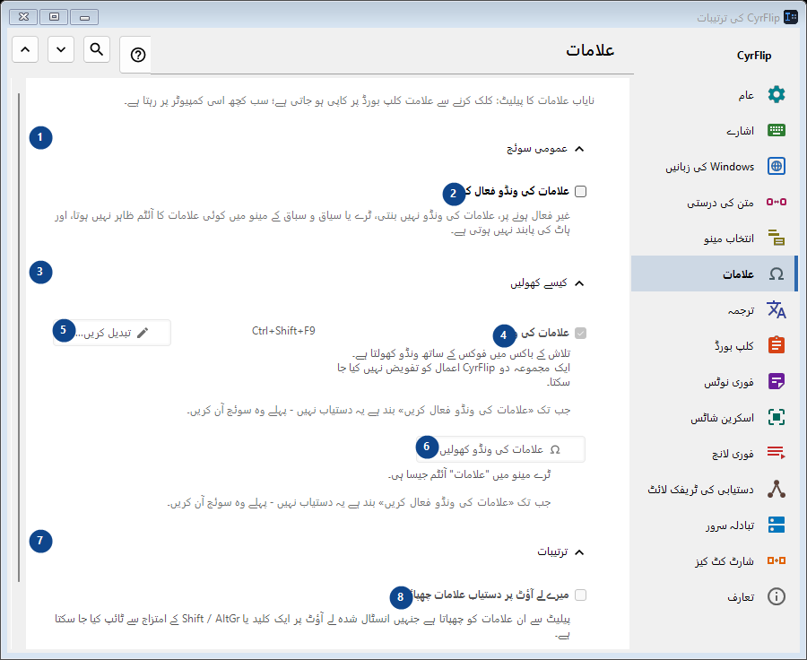
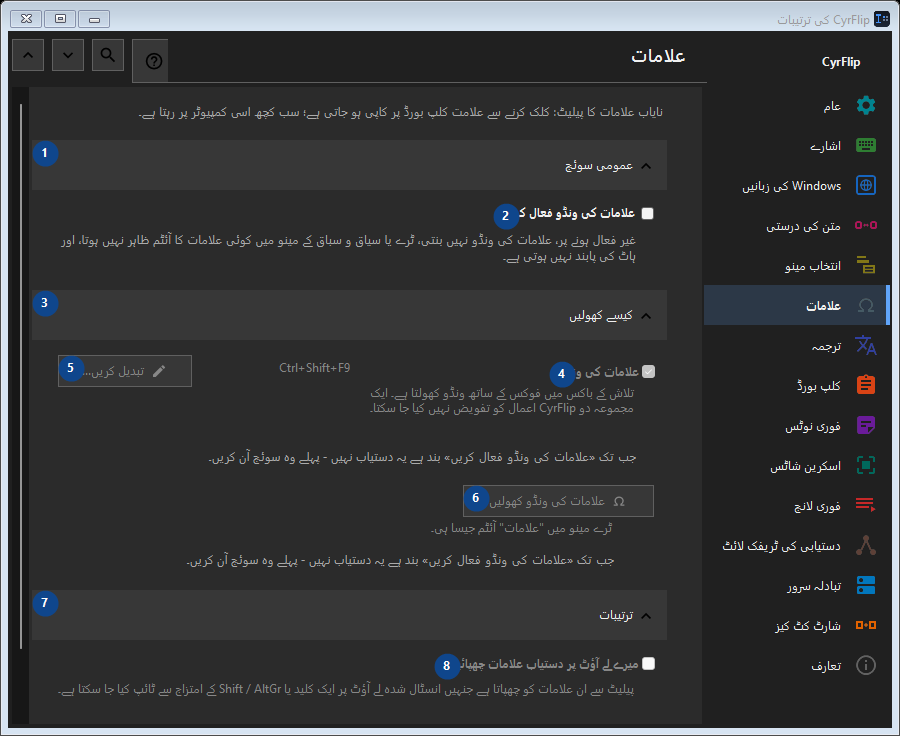

علامات
مقصد
نایاب علامات کا پیلیٹ: کلک کرنے سے علامت کلپ بورڈ پر کاپی ہو جاتی ہے؛ سب کچھ اسی کمپیوٹر پر رہتا ہے۔


استعمال کی ترتیب
ترتیبات فوراً لاگو ہوتی ہیں۔ کوئی لازمی ترتیب نہیں؛ نیچے کے گروپ استعمال کریں۔
عناصر
1. عمومی سوئچ
درج شدہ کارروائی کے لیے یہ حکم استعمال کریں۔ قبول کرنے سے پہلے تصدیق پڑھیں۔
آپ کے شارٹ کٹ2. علامات کی ونڈو فعال کریں
غیر فعال ہونے پر، علامات کی ونڈو نہیں بنتی، ٹرے یا سیاق و سباق کے مینو میں کوئی علامات کا آئٹم ظاہر نہیں ہوتا، اور ہاٹ کی پابند نہیں ہوتی ہے۔
آپ کے شارٹ کٹ3. کیسے کھولیں
درج شدہ کارروائی کے لیے یہ حکم استعمال کریں۔ قبول کرنے سے پہلے تصدیق پڑھیں۔
آپ کے شارٹ کٹ4. علامات کی ونڈو
جب تک «علامات کی ونڈو فعال کریں» بند ہے یہ دستیاب نہیں - پہلے وہ سوئچ آن کریں۔ یہ عنصر ابھی دستیاب نہیں۔ پہلے خصوصیت فعال کریں یا اندراج منتخب کریں۔
آپ کے شارٹ کٹ5. تبدیل کریں - علامات کی ونڈو
جب تک «علامات کی ونڈو فعال کریں» بند ہے یہ دستیاب نہیں - پہلے وہ سوئچ آن کریں۔ یہ عنصر ابھی دستیاب نہیں۔ پہلے خصوصیت فعال کریں یا اندراج منتخب کریں۔
آپ کے شارٹ کٹ6. علامات کی ونڈو کھولیں
جب تک «علامات کی ونڈو فعال کریں» بند ہے یہ دستیاب نہیں - پہلے وہ سوئچ آن کریں۔ یہ عنصر ابھی دستیاب نہیں۔ پہلے خصوصیت فعال کریں یا اندراج منتخب کریں۔
آپ کے شارٹ کٹ7. ترتیبات
درج شدہ کارروائی کے لیے یہ حکم استعمال کریں۔ قبول کرنے سے پہلے تصدیق پڑھیں۔
آپ کے شارٹ کٹ8. میرے لے آؤٹ پر دستیاب علامات چھپائیں
جب تک «علامات کی ونڈو فعال کریں» بند ہے یہ دستیاب نہیں - پہلے وہ سوئچ آن کریں۔ یہ عنصر ابھی دستیاب نہیں۔ پہلے خصوصیت فعال کریں یا اندراج منتخب کریں۔
آپ کے شارٹ کٹ